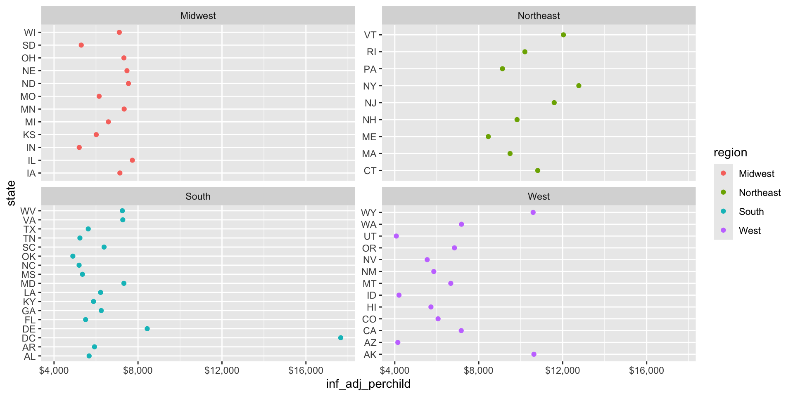

Week 4 - STEM 691
Intro to ggplot2
Grammar of Graphics
ggplot2is a package in the coretidyversethat allows you to create visualizations using the Grammar of Graphics.1Built by Hadley Wickham (Chief Data Scientist at Posit). He also wrote the
ggplot2book.

Grammar of Graphics
- The Grammar of Graphics is a system for understanding how to create visualizations by breaking them down into components.
- grammar: a particular analysis of the system and structure of language or of a specific language
- There are eight components in ggplot’s grammar.

Grammar of Graphics
- In English, the minimum components needed to create a sentence are:
- Subject (at least implied)
- Verb
- In
ggplot2, the minimum components needed to create a visualization are:- Data
- Aesthetics
- Geometries

Grammar of Graphics
- In many ways,
ggplot2functions similarly to image editing software.- Both work on the principle of layering.

- Both work on the principle of layering.

Grammar of Graphics


Grammar of Graphics


Grammar of Graphics
- Building an example plot using
tidykids:datato be usedaesthetic mapping from data to visualgeometric objects to use on plot


Grammar of Graphics
- Building an example plot using
tidykids:datato be usedaesthetic mapping from data to visualgeometric objects to use on plotscaleto adjust axes, colors, etc.


Grammar of Graphics
- Building an example plot using
tidykids:datato be usedaesthetic mapping from data to visualgeometric objects to use on plotscaleto adjust axes, colors, etc.facetsto group into subplots

Grammar of Graphics
- Building an example plot using
tidykids:datato be usedaesthetic mapping from data to visualgeometric objects to use on plotscaleto adjust axes, colors, etc.facetsto group into subplotscoordinates adjust coordinate system


Grammar of Graphics
- Building an example plot using
tidykids:datato be usedaesthetic mapping from data to visualgeometric objects to use on plotscaleto adjust axes, colors, etc.facetsto group into subplotscoordinates adjust coordinate systemlabs(labels) to add titles, labels, etc.

p <- tidykids |>
filter(year == 2016,
variable == "PK12ed")|>
mutate(state = state.abb[match(state, state.name)]) |>
ggplot(aes(x = inf_adj_perchild, y = state, color = region)) +
geom_point() +
scale_x_continuous(labels = scales::dollar_format()) +
facet_wrap(~region) +
coord_flip() +
labs(title = "Per Pupil Spending by State",
x = "Per Pupil Spending in 2016 Dollars (Adjusted for Inflation)",
y = "State")
p
Grammar of Graphics
- Building an example plot using
tidykids:datato be usedaesthetic mapping from data to visualgeometric objects to use on plotscaleto adjust axes, colors, etc.facetsto group into subplotscoordinates adjust coordinate systemlabs(labels) to add titles, labels, etc.themeto adjust overall appearance(built-in)
p <- tidykids |>
filter(year == 2016,
variable == "PK12ed")|>
mutate(state = state.abb[match(state, state.name)]) |>
ggplot(aes(x = inf_adj_perchild, y = state, color = region)) +
geom_point() +
scale_x_continuous(labels = scales::dollar_format()) +
facet_wrap(~region) +
coord_flip() +
labs(title = "Per Pupil Spending by State",
x = "Per Pupil Spending in 2016 Dollars (Adjusted for Inflation)",
y = "State")+
theme_minimal() +
theme(legend.position = "none",
axis.text.x = element_text(size = 5, angle = 90, hjust = 1))
pExample 1: Pre-work

Example 1: Pre-work
- Which
geoms?geom_col()geom_errorbar()geom_hline()
Example 1: Pre-work
- Which
geoms?geom_col()geom_errorbar()geom_hline()
- What variables/data wrangling do I need?
- Create a
regionvariable - Filter for 2016
- Filter for
PK12ed - Calculate national mean (separate from tibble)
- Group by
region- Summarize:
- mean
- std. deviation
- Summarize:
- Create a